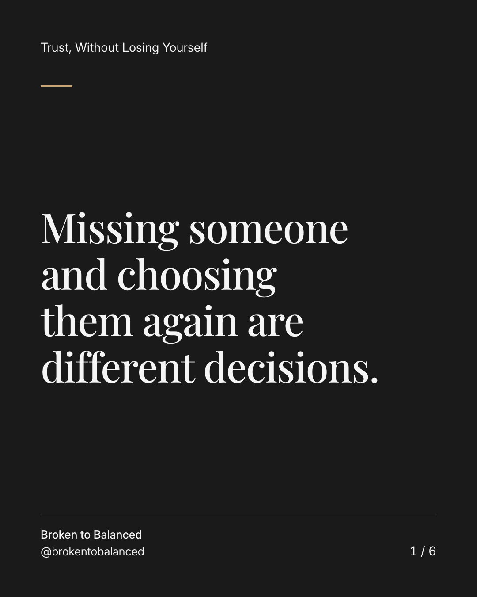
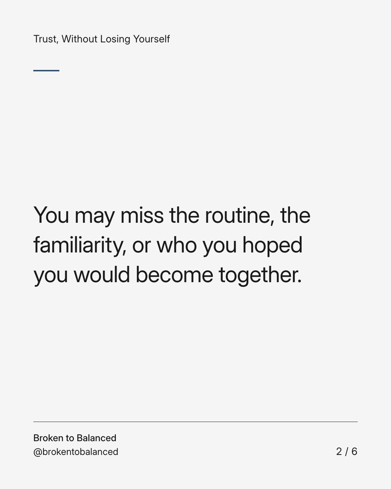
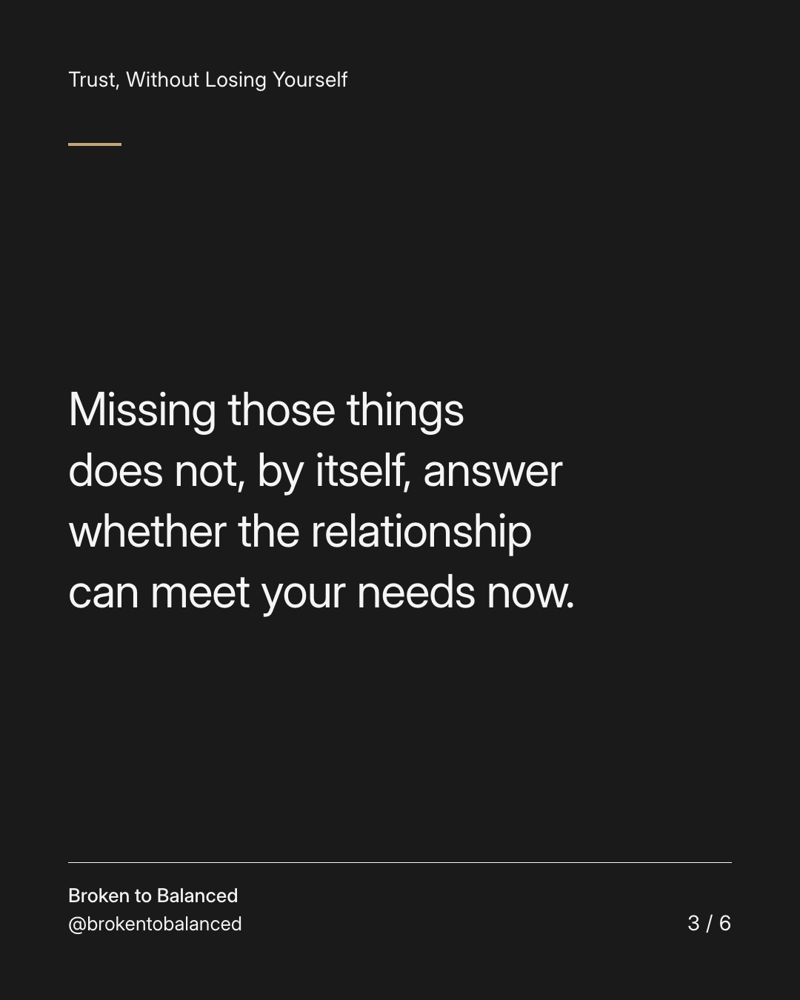
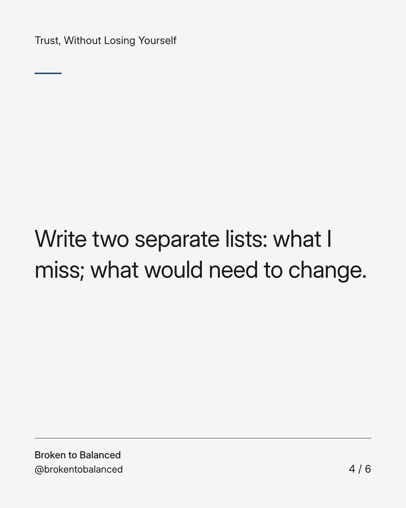
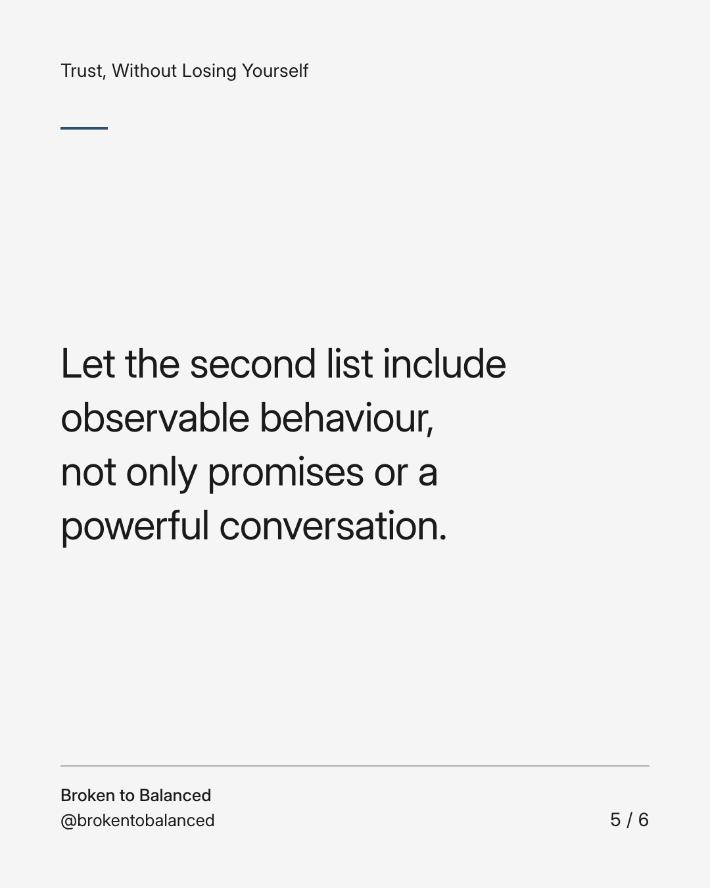
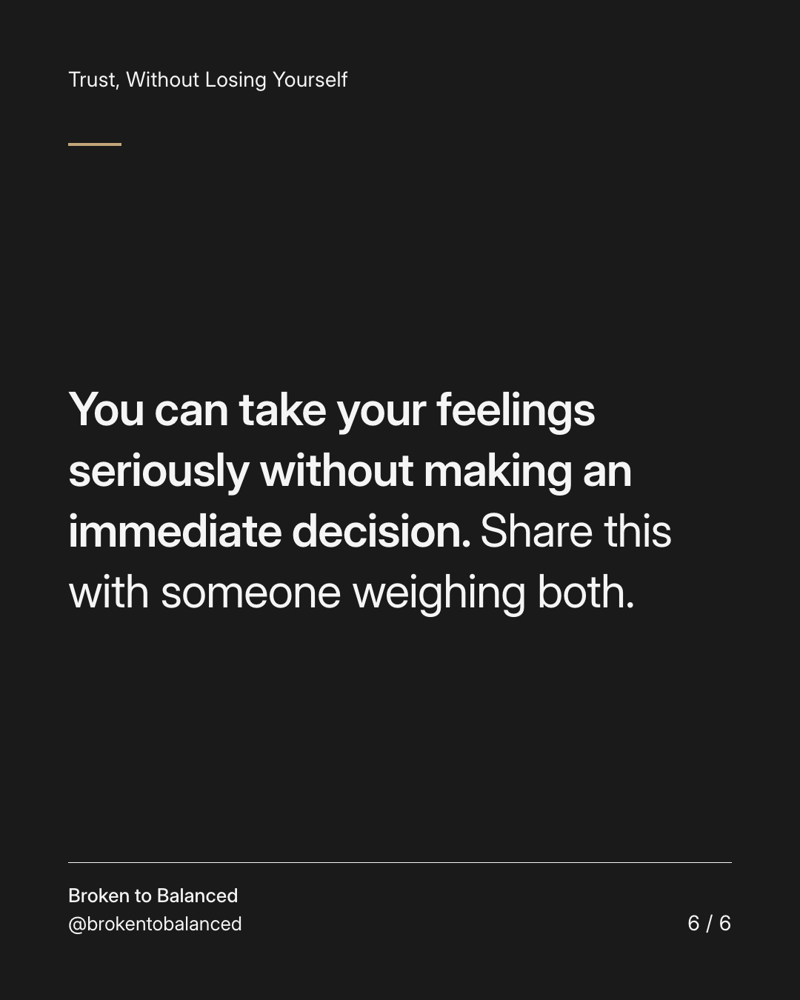

Exact text and accessibility text
Missing someone and choosing them again are different decisions.
Slide 1 of 6. Missing someone and choosing them again are different decisions.


Exact text and accessibility text
You may miss the routine, the familiarity, or who you hoped you would become together.
Slide 2 of 6. You may miss the routine, the familiarity, or who you hoped you would become together.


Exact text and accessibility text
Missing those things does not, by itself, answer whether the relationship can meet your needs now.
Slide 3 of 6. Missing those things does not, by itself, answer whether the relationship can meet your needs now.


Exact text and accessibility text
Write two separate lists: what I miss; what would need to change.
Slide 4 of 6. Write two separate lists: what I miss; what would need to change.


Exact text and accessibility text
Let the second list include observable behaviour, not only promises or a powerful conversation.
Slide 5 of 6. Let the second list include observable behaviour, not only promises or a powerful conversation.


Exact text and accessibility text
You can take your feelings seriously without making an immediate decision. Share this with someone weighing both.
Slide 6 of 6. You can take your feelings seriously without making an immediate decision. Share this with someone weighing both.
Exact caption
Plain-text fallback: select and copy the caption.